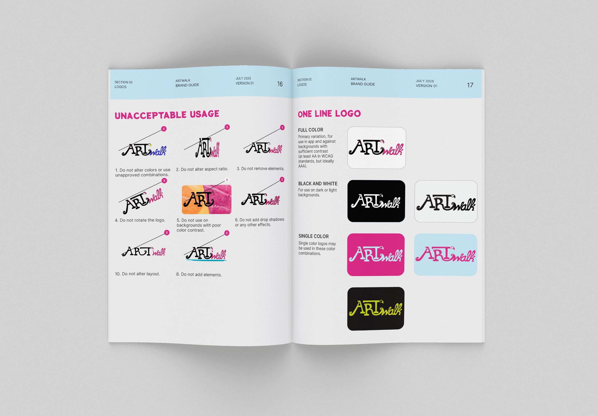

ArtWalk: Designing Connection Through an Arts and Community App
PROBLEM STATEMENT AND INTENDED SOLUTION
The United States is facing an epidemic of loneliness. Social isolation is linked to a significantly increased risk of depression, anxiety, inflammation, heart disease, stroke, type 2 diabetes, and kidney disease as well as lowered ability to fight viruses. Studies show that of the current generations, young adults are the loneliest. This has been attributed to young adult years introducing large social and geographic changes, a lack of community and family connection, and social media use.
Art, in its many forms, posseses a unique way of helping people to celebrate, grieve, express, and explore. There is power in art’s ability to take something from inside an artist and make it visible so that others in the world can see and feel that their own thoughts, feelings, or experiences are not isolated unto themselves. It unites us in humanity. It helps us not only to feel seen, but to expand our world view with new ways of seeing.
Research suggests that artistic expression and appreciation can improve well-being by increasing serotonin, activating the pleasure and rewards systems of the brain, and eliciting feelings of hope for the future. Viewing art is said to have benefits similar to those of meditation or mindfulness exercises. Physical activity has also been shown to improve both physical and mental health. Through this project, I seek to combine art, physical activity, and gamified community-building strategies to combat social isolation in young adults.
MOODBOARD AND DESCRIPTION
Some cities host gallery nights or art walks on a yearly or monthly basis. Through considering the joy and connection I've witnessed at such events, paired with the playful motivation to get active I've noticed users of Pokemon Go experiencing, the idea for ArtWalk was born.
ArtWalk is an app designed to connect people with the art and humans in their surrounding area. Through the app, people will be able to generate their own art walks, guided by augmented reality and GPS. With a combination of fitness and social goals, along with an engaging interface, ArtWalkers will be motivated to explore the world outside their font door. Rather than encouraging comparison culture which can result in feelings of isolation, ArtWalk encourages users to seek meaningful connection and community.
Upon opening the app, new users will answer a series of onboarding questions which will determine their location, physical activity goals, social goals, and arts-related interests. Then, each time users access the app, they will be able to choose between generating a personalized walking art tour and browsing through curated arts-related meetups to attend. The app will feature challenges and other gamified elements in order to motivate and engage users. Whether they're interested in connecting with people they already know, having a solo experience in public art spaces, or attending social events to meet new people, ArtWalk has users covered.
The UI is be bright, playful, and engaging. Hand-drawn illustrations and textures mimicking art supplies like paint and paper will connect to the app's theme and work to challenge the conventional smooth, flat experience users may expect from an app. This is intentionally echoing the way the functionality of the app works to challenge the superficial experiences users may expect from a social app. In all ways, ArtWalk seeks to add depth, color, and texture to the lives of its users.
PROCESS

ArtWalk began as Design Studio project mid-way through my three years as a student in MCAD's MA in Graphic and Web Design program. I revisited the concept in my Experimental Interaction and UX Design coursework when possible, making changes and improvements as my learning progressed. Finally, I brought that foundation into the Capstone course where it became what it is today. The journey has been anything but linear, as shown in the image above.
PROCESS | RESEARCH

LITERARY AND MARKET RESEARCH
I began my research process by reviewing literary resources focused on mental and physical health, especially concerning its relationship to technology and social isolation. I have also been researching how art affects the brain as well as existing gallery nights, self-guided art tours, and how they function.
Through market research, I was able to discover and study any similar apps that currently exist. I also researched gallery nights and art walks in various cities as well as mental health, the impacts of similar apps, the loneliness epidemic the US is experiencing, and how technology can be reframed as a connector rather than an isolator.
Of the similar apps I have been able to find (some of which are shown in the imagery below), none have combined all of the elements I intend to include in Art Walk. Many focus on one specific geographic location or type of art (i.e. Greater Palm Springs and public outdoor art). They also lack the integration of fitness and art experience tracking and goal setting.
UX RESEARCH
For my first round of interviews and surveys, I had 19 participants. Some were interviewed separately, in a face-to-face setting, while others took an online survey. They were asked questions about art, their mental health, technology and social media use, physical activity, and social preferences. Some of the key takeaways can be seen in the image below.

I then set out to gather data about the artists and arts organizations that could provide the very important art piece of ArtWalk. To gain a better understanding of users on the arts input side rather than the general consumer side of the app, I interviewed Morgen Ruff, who works with NEMAA as one of the producers of Art-A-Whirl. As another method of gathering data about artists, arts administrators, and arts business owners, I have been circulating an additional survey I created with Google Forms. So far, I have had 16 responses. The survey is still open and I hope to receive more.
Above are some of the key takeaways from the arts-centered survey.
To add some ethnography to the mix of research methods, I sat in a busy area near the cafe on a university campus and observed the interactions and behavior taking place there. What I observed reinforced some of my findings from interviews and surveys about how people are more likely to engage socially if they planned ahead. There seems to be more discomfort and avoidance when it comes to engaging with others organically.
I also conducted a diary study. In the study, a group of four participants logged their human interactions and technological interactions over the span of 2 weeks, tracking their feelings after each. Pictured below is an empathy board I created while synthesizing my diary study findings. This was prior to redesigning ArtWalk's logo.

SUBJECT MATTER EXPERT MEETINGS
I was fortunate enough to be able to have Google Meet discussions with three subject matter experts. The meetings were staggered throughout the semester, a choice I made so I could be sure to receive expert feedback at various stages of my process. The subject matter experts who so generously gave their time to view my project and provide helpful feedback were:
- Mathias Rechtzigel
- When you design for all, you design for none. This inspired me to deepen my research on the loneliest demographic, ultimately shifting my target audience to 18-29 year olds.
- In order to build an aesthetically cohesive world, I could consider which art tools elements across the app appear to have been made with. This lead me to my decision of using paper texture and painted details repeatedly.
- Rather than static images to represent the walking segments between art stops, try shooting actual video. This was transformative in terms of bringing ArtWalk into a new level of high fidelity.
- Spend the most time on elements of my project that represent the type of work I’d love to do more of. This lead me to lean into the illustrated details throughout the app.
- Grace Deck
- Use check boxes in places where users can select multiple choices.
- Consider adding more detail to the reasoning behind my color choices. This was helpful when I was thinking about how much detail to include in my brand guide later on.
- Add a “skip” button to onboarding screens.
- Add a circle around buttons when they’re in their selected state for added clarity.
- Add a reminder of where walk is going, or what to look for on the screen during the Walk flow.
- Mike Arney
- Arrange sign in/sign up screen in a hierarchy according to which methods would be easiest for users. This will help keep them from stopping before they get into it. Sign in With Google should go above Sign in With Email since it’s faster and easier.
- Add a context screen between onboarding and home screen to orient users.
- Be very thoughtful and intentional about where the consent screen goes, asking users to allow camera and location access.
- Explore some type of progress indicator for how many stops have been visited and how many are left, distance, etc. This was helpful when I came back to the Walk screens and needed to decide what to include in adding additional wayfinding details.
Mathias Rechtzigel is a digital designer and technologist. He approaches his work through a user-centric approach, with equity and accessibility as priorities. Mathias has worked for The Centers for Medicare & Medicaid Services, Federal Reserve Bank of Minneapolis, the U.S Department of the Treasury, UnitedHealthcare, UnitedHealthGroup, U.S. Bank, Best Buy, CHS Inc.
Some key suggestions from Mathias that helped shape my work with ArtWalk include:
On her website, Grace describes herself as “a product designer chasing better, not just prettier. Systems thinker, visual nerd, and social impact enthusiast.” Some of the companies she has worked for include UnitedHealthcare, Federal Reserve Bank of Mpls, Thomson Reuters, HealthPartners, and 3M.
Some of the suggestions from Grace which helped shape my work with ArtWalk include:
Mike Arney is a product designer and owner of Halftone Digital, a digital product and design studio offering interface design, UX, motion design, prototyping, design systems, and branding. Halftone Digital’s clients include Adobe, Medtronic, Mozarc Medical, and Charge Over. Beyond his work with Halftone, Mike also works as a lecturer in Graphic Design at University of Minnesota, College of Design.
Some key suggestions from Mike that helped shape my work with ArtWalk include:
USER TESTING
To conduct user testing with my target audience, I put together a Google Form with brief instructions, a link to my Figma prototype, and questions for participants to fill out either progressively as they interacted with the prototype or afterwards. Participants were tasked with navigating through the onboarding sequence, Walk journey, and Meet journey. Six individuals between the ages of 18 and 29 participated. Their feedback has been immensely helpful in informing my revisions and choices about additional features to design in the app.
PROCESS | LOGO SKETCHES
The name Art Walk connects the inspiration I have taken from art walks and gallery nights with the physical act of walking from art experience to art experience.
Creating a hand lettered logo for ArtWalk felt important to me, as having a hand-made feel would help to express the humanity and artistic nature of the app. I began by drawing guides in my sketchbook and then adding the letterform skeletons. Next, I added the body (building it gradually from the inside out like a sculpture) and stylistic elements. I did this a few times before putting the sketch into Procreate to clean it up and then Illustrator to vectorize it. Below, you'll see some of that process.

A rough sketch in my actual sketchbook, where I began with just the word Art

I imported a photo of my pencil sketch into Procreate where I traced and made some changes to the letterform shapes (for example, the brush is now turned down rather than up). Next, I exported that file and vectorized it in Illustrator.
The evolution of ArtWalk's logo from summer 2023-2025.
OUTCOME | BRAND ELEMENTS
THE BRAND GUIDE
As one of my deliverables, I created a 41 page brand guide for ArtWalk. This allowed me to get very specific about visual elements such as logo design and use, color, and typographic system for the brand. It also presented an opportunity for me to create a formal mission and vision statement for ArtWalk, along with core values. All of this helped shape my work with ArtWalk's high fidelity prototype as I moved through the Capstone process.
View the full brand guide here.
LOGO SUITE
I designed the ArtWalk logos to feel playful and fun, with a nod to the art supply aesthetic of the app. The logo suite contains a primary wordmark as well as a monogram logo. The "walk" portion of the wordmark is designed to feel fluid and in motion, with the letter K appearing to step off to the right with one foot forward. In the version I intend to use on the first page of the app, "Art" is flat while "walk" is inflated in shiny 3D meant to be reminiscent of wet acrylic paint. My thought here is that the paint brush of the T could have painted the word "walk", which is what inspired me to design that portion of the logotype in a script style.

COLOR PALETTE
The color palette is inspired by the vibrant public murals users may see on their walks. In choosing my color palette, I used accessibility checkers (often WebAIM) to make sure there would be a sufficient variety of possible foreground and background combinations from within the palette that would pass WCAG standards for normal text, large text, and graphical objects and UI components.
ICONS AND BUTTONS
It was important to me that the icons match the artistic spirit of the app, both in style and texture. To achieve this, I designed them in Procreate on the iPad. First, I added a layer of watercolor paper texture. Then, using the watercolor brush, I created added color and painted texture. I created three circular backgrounds in this style, in ArtWalk's signature blue, pink, and green colors. I then duplicated those painted backgrounds and used them behind the icon images, which I hand drew in Procreate with another style of paint brush. The circular painted backgrounds unite the various icons in shape and size, and add another way to explore use cases for color.
Additional icons with the monogram logo show up during the Walk journey. Users are able to use them to help identify where they are on the ArtWalk map. They can also click on the version with the gradient brush stroke around it when it appears to view information about the art stop they are visiting. The gradient brush stroke colors are made of ArtWalk's pink, blue, and green.

Buttons feature the watercolor backgrounds seen in the hand drawn icons. When selected, the button variant uses the pink, blue, and green gradient brush stroke style.
Arrows were designed in 3D pink material to tie in with the 3D wet paint feel of the "walk" portion of ArtWalk's wordmark.
IMAGERY

Onboarding photos were chosen for their alignment with the target demographic, as well as their vibrant colors. I was mindful in the stock imagery I chose, considering representation as I want users to be able to see themselves reflected in the onboarding process. After all, this process is about them. Mural textures and patterns are used at a lowered opacity in backgrounds throughout the app to add additional texture and visual interest. Paint streaks paired with text are used in animation overlays at certain times when the user is transitioning from one section to another. Images for events were sourced primarily from The Isthmus, a local paper with arts events listings. The wet paint style 3D arrow makes a reappearance as an augmented reality guide during walking tour screens.

Hand illustrated maps help ArtWalkers understand the journey ahead while maintaining ArtWalk’s color themes and signature hand-illustrated style. Because this map is one of the first screens ArtWalkers see during the Walk flow, it felt important to me to design a map that would help them into the appropriate headspace for the artful activity ahead.
TYPOGRAPHY
Typographic choices are clean and modern yet approachable, with an emphasis on legibility. The H1 font is the only highly stylized choice, and it is still quite easy to read. Potta One was chosen as a display font for its painterly style. A clear hierarchy of size and weight will help users to better understand their experience in app as they navigate through it.
PHYSICAL ADVERTISEMENTS


MERCHANDISE


OUTCOME | HIGH FIDELITY PROTOTYPE
After gathering a sufficient amount of data from my research, sketching numerous iterations, wireframing, and designing the brand elements featured in the Style Guide section, I built a high fidelity prototype in Figma.
Video walkthrough of what users will see during the onboarding process when getting set up with ArtWalk
Video walkthrough of a self-guided art tour using ArtWalk, with stops at various types of physical art stops
Video walkthrough exploring an augmented reality art stop. I used Adobe Aero to create this experience.
Video walkthrough of how users can find events using the ArtWalk app.
With my Figma prototype, it's now possible to simulate the experience of onboarding, generating and taking an ArtWalk, and finding events.